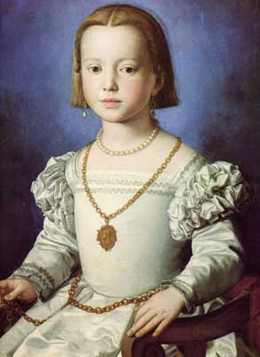
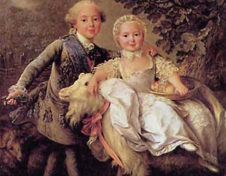

|
Детские
корсеты XVI - XVII веков
|
||
| Детские
корсеты появились в XVI веке. «Тренировка» детского неокрепшего
тельца начиналась уже с колыбели. 6 мая 1676 года мадам Севиньи записала
в своем дневнике такую рекомендацию: «Для начала необходимо облачить детей
в маленькие полужесткие корсеты, если Вы желаете
сохранить их тонкую талию». В XVII веке девочки двух лет уже обязаны были носить миниатюрные корсеты для поддержания осанки «во избежание деформации скелета», а также «для формирования изящной талии и высокой груди». Девушки с 16 – 18 лет начинали носить жесткие взрослые модели, которые не снимали до конца жизни. |
 |
|
| Жан Батист Семеон Шарден. Девочка играющая с воланом. Середина XVII в. | Алоньоло Бронзино. Портрет Изабеллы Медичи. 1552 г. | |
 |
По всем канонам воспитания мальчики с
младенчества и до шести лет носили женское
платье, а следовательно, до шести лет они также вынуждены были терпеть тиски
корсета. |
|
| Ф. Друэ. Карл французский и его сестра Аделаида. Лувр. Париж. | ||
|
Вопросы
для самопроверки
|
||
| 1.
В каком возрасте на детей начинали одевать корсеты? 2. Какие корсеты носили дети? 3. Разделялись ли детские корсеты по полу? |
||